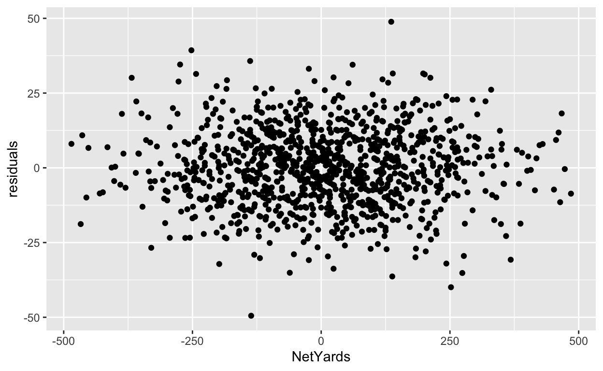
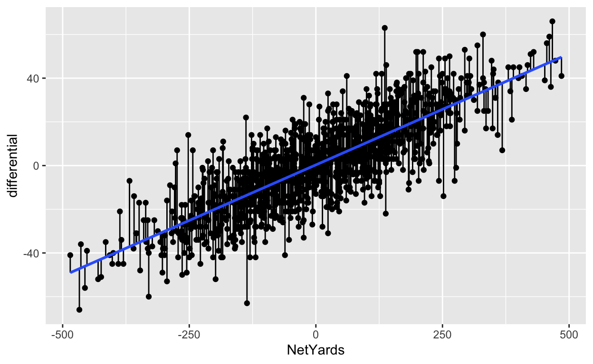
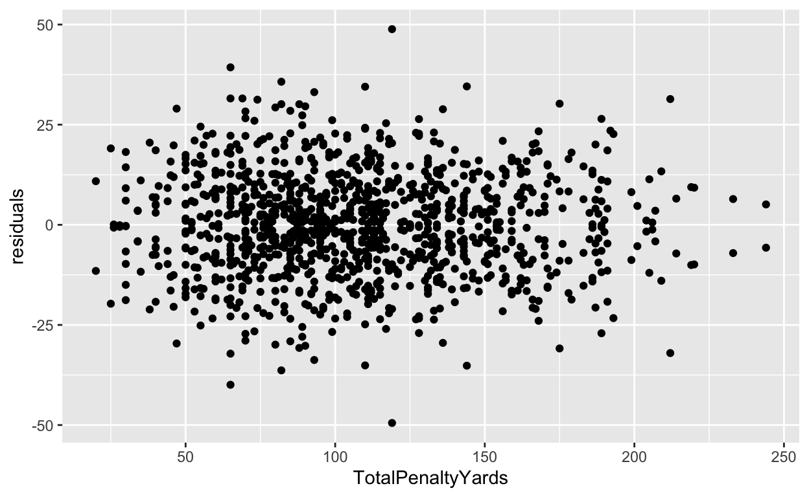

When looking at a linear model of your data, there’s a measure you need to be aware of called residuals. The residual is the distance between what the model predicted and what the real outcome is. Take our model at the end of the correlation and regression chapter. Our model predicted Nebraska, given a 5 net yardage margin would beat Iowa by 1.96 points in 2020. They lost by 6. So our residual is -7.96.
Residuals can tell you several things, but most important is if a linear model the right model for your data. If the residuals appear to be random, then a linear model is appropriate. If they have a pattern, it means something else is going on in your data and a linear model isn’t appropriate.
Residuals can also tell you who is underperforming and overperforming the model. And the more robust the model – the better your r-squared value is – the more meaningful that label of under or overperforming is.
Let’s go back to our net yards model from the previous lesson. We need data from the 2020 college football season. For purposes of this exercise, you don’t need to do this. The data is included here if you want to try this in your own notebook.
For this walkthrough:
Then load the tidyverse.
library(tidyverse)library(tidyverse)Now import the data.
correlations <- read_csv("http://mattwaite.github.io/sportsdatafiles/footballlogs20.csv")correlations <- read_csv("http://mattwaite.github.io/sportsdatafiles/footballlogs20.csv")Under the hood, I’ve gone ahead and made the mutations for you from the last chapter. You can see it in a dataframe called residualmodel.
head(residualmodel)head(residualmodel)Just like the headline says, it’s time to create a linear model like we did in the last lesson. We’ll create a linear model object called fit, and we’ll use our residualmodel dataframe. In the model, we’ll say that differential is approximately modeled by NetYards.
??? <- lm(differential ~ ???????, data = ?????????????)
summary(???)We’ve seen this output before, but let’s review because if you are using scatterplots to make a point, you should do this. First, note the Min and Max residual at the top. A team has underperformed the model by nearly 50 points (!), and a team has overperformed it by 49 points (!!). The median residual, where half are above and half are below, is just slightly above the fit line. Close here is good.
Next: Look at the Adjusted R-squared value. What that says is that 64 percent of a team’s scoring output can be predicted by their net yards.
Last: Look at the p-value. We are looking for a p-value smaller than .05. At .05, we can say that our correlation didn’t happen at random. And, in this case, it REALLY didn’t happen at random. But if you know a little bit about football, it doesn’t surprise you that the more you outgain your opponent, the more you win by. It’s an intuitive result.
What we want to do now is look at those residuals. We want to add the residuals to our individual game records. We can do that by creating two new fields – predicted and residuals – to our dataframe. We’re going to use a two functions in mutate you haven’t seen yet – predict and residuals. Predict will give you the number our model would predict would happen given our model. Residuals does the work for you by taking the predicted score and subtracting the actual score. A positive number overshoots the model. A negative number undershoots it.
Then, let’s arrange it by residuals so see see the worst misses, and then use select to make it all easier to read.
residualmodel <- residualmodel %>% mutate(predicted = predict(fit), residuals = residuals(fit))
residualmodel %>% arrange(desc(residuals)) %>% select(Team, Opponent, Result, differential, NetYards, predicted, residuals)Looking at this table, what you see here are the teams who scored more than their net yards would indicate. One of them should jump off the page at you.
Remember Nebraska vs Rutgers at the end of the COVID season? We won and everyone was happy and relieved the season was over? We outgained Rutgers by 368 yards in that game and won by 7. Our model predicted Nebraska should have won that game by 37 points. We should have blown Rutgers out of their own barn. But Rutgers isn’t as hard done as Arizona, which should have lost by 48, but ended up losing by 63.
But, before we can bestow any validity on this model, we need to see if this linear model is appropriate. We’ve done that some looking at our p-values and R-squared values. But one more check is to look at the residuals themselves. We do that by plotting the residuals with the predictor. We’ll get into plotting soon, but for now just seeing it is enough.

The lack of a shape here – the seemingly random nature – is a good sign that a linear model works for our data. If there was a pattern, that would indicate something else was going on in our data and we needed a different model.
Another way to view your residuals is by connecting the predicted value with the actual value.
## `geom_smooth()` using formula 'y ~ x'
The blue line here separates underperformers from overperformers.
Now let’s look at it where it doesn’t work: Penalties.
Under the hood, I’ve gone ahead and made the mutations for you from the last chapter. You can see it in a dataframe called penalties
head(penalties)head(penalties)For this we’ll make an object called pfit – for penalty fit – similar to what we did before. This time, we’ll say differential is approximately modeled by TotalPenaltyYards.
pfit <- lm(???????????? ~ ?????????????????, data = penalties)
summary(????)So from top to bottom:
So what we can say about this model is that it’s statistically insignificant and utterly meaningless. Normally, we’d stop right here – why bother going forward with a predictive model that isn’t predictive? But let’s do it anyway. Just like a previous exercise, we’ll add precited and residuals to our dataframe. Then we’ll arrange it, and use a little select magic to make it easier to read.
penalties <- penalties %>% mutate(predicted = predict(????), residuals = ?????????(pfit))
????????? %>% arrange(desc(?????????)) %>% select(Team, Opponent, Result, differential, NetYards, predicted, residuals)First, note all of the biggest misses here are all blowout games. The worst games of the 2020 season, the worst being Clemson vs Georgia Tech. The model missed that differential by … 65 points. The margin of victory? 66 points. In other words, this model is terrible. But let’s look at it anyway.

Well … it actually says that a linear model is appropriate. Which an important lesson – just because your residual plot says a linear model works here, that doesn’t say your linear model is good. There are other measures for that, and you need to use them.
Here’s the segment plot of residuals – you’ll see some really long lines. That’s a bad sign. Another bad sign? A flat fit line. It means there’s no relationship between these two things. Which we already know.
## `geom_smooth()` using formula 'y ~ x'